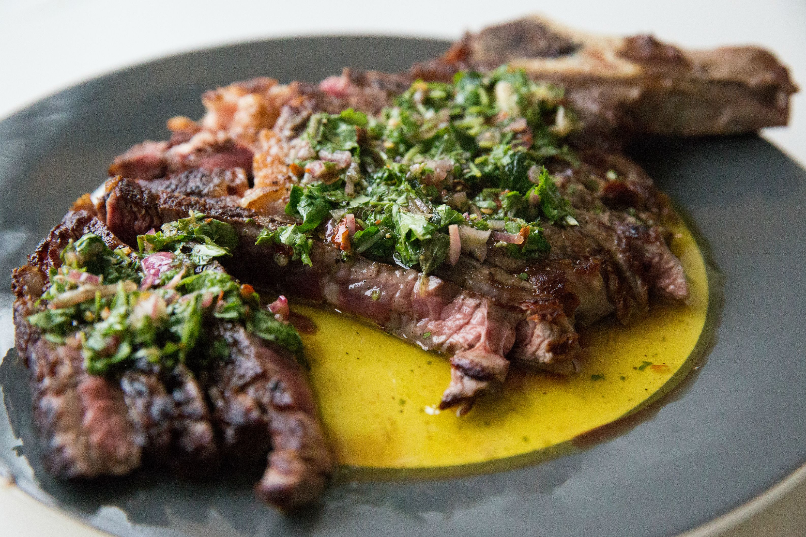

Argentinian Steak with Red Chimichurri

Description:
Argentinian culture is renowned for beef and asados (barbecues). Red
chimichurri sauce is the typical sauce accompaniment.
Ingredients:
Chimichurri
- 1 bunch chopped fresh flat-leaf parsley
- 1 medium onion, finely chopped
- 1 tomato, chopped
- ½ red bell pepper, seeded and diced
- 4 cloves garlic, minced
- 1 tablespoon dried oregano
- 1 tablespoon paprika
- 1 tablespoon coarse salt
- 1 teaspoon crumbled bay leaf
- 1 teaspoon ground black pepper
- 1 pinch red chile flakes, or to taste
- ¼ cup red wine vinegar
- ¼ cup water
- ½ cup olive oil
Steak
- 4 sirloin steaks, 1-inch thick
- 2 sweet onions, chopped
- 1 bunch fresh cilantro, chopped
- ½ cup white wine vinegar
- ¼ cup olive oil
- 4 cloves garlic
- 1 ½ tablespoons chopped fresh thyme
- 1 tablespoon chopped fresh oregano
- 1 tablespoon ground cumin
Steps:
-
Place parsley, onion, tomato, bell pepper, garlic, oregano, paprika,
salt, bay leaf, black pepper, and chile flakes into a large bowl. Allow
to sit for 30 minutes.
-
Mix vinegar and water into the chimichurri and allow to sit for another
30 minutes.
-
Mix olive oil into the mixture and transfer to a glass, non-reactive,
container with a lid. Make sure liquid covers the ingredients; if not,
add equal parts water, red wine vinegar, and oil until it does. Place in
the refrigerator and let stand, 6 hours, up to 2 days.
-
Poke steaks all over with a fork. Mix sweet onions, cilantro, white wine
vinegar, olive oil, garlic, thyme, oregano, and cumin together for beef
in a bowl.
-
Place steaks into marinade and refrigerate for 6 hours, to overnight.
- Preheat an outdoor grill for high heat and lightly oil the grate.
-
Sear steaks on the preheated grill, about 2 minutes on each side. Reduce
heat to medium and grill until desired doneness level, or about 5
minutes per side. Serve with chimichurri.